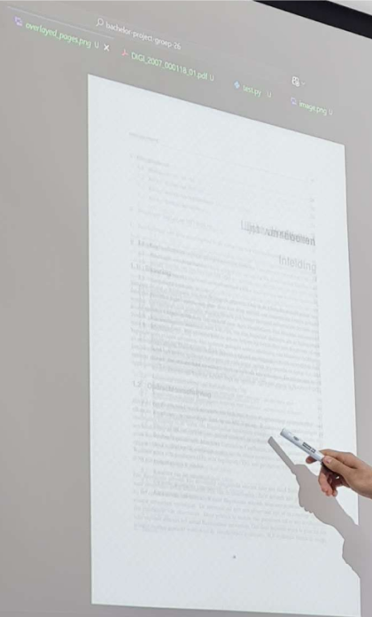
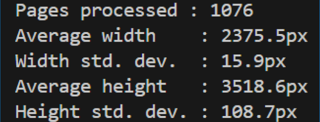

Voorcontrole pdf
Het programma maakt gebruik van Tesseract om OCR uit te voeren op een afbeelding. Dat is een open-source OCR systeem gemaakt door Google, dat net zoals Abby FineReader met zekere nauwkeurigheid karakters kan detecteren in afbeeldingen.

Om na te kijken waar we best zouden zoeken voor paginanummers, selecteerden we tien willekeurige pagina’s uit verschillende pdf’s en legden deze op elkaar, elk met een transparantie van tien procent. Op deze manier konden we op een visuele manier identificeren waar tekst regelmatig voorkomt. We waren echter enkel benieuwd naar de paginanummers, die zich meestal bevonden in de eerste of laatste regels van een pagina.
Om tijd en middelen te besparen besloten we dat het best was om enkel deze relevante zones (hoofdstuk en voettekst) uit de afbeelding te knippen. Vervolgens voegden we deze samen, met wat witruimte ertussen om de A4-structuur te behouden voor optimale OCR-werking. Dit leverde vrij nauwkeurige resultaten op, die zelfs beter werden toen we de OCR-engine mode (OEM) wijzigden van 3 naar 2.
Voor de detectie van dubbele scans voerden we een analyse uit op een verzameling van pdf’s, en keken we telkens wat de gemiddelde grootte was (rekening houdend met outliers).
We gebruiken nu dit gemiddelde als een hardcoded waarde waar slechts licht (20%) van afgeweken mag worden. Bij een te groot verschil wordt deze pagina geflagged met een waarschuwing dat deze waarschijnlijk een dubbele scan is.
